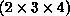

MPI_CART_SUB(comm, remain_dims, newcomm)
[ IN comm] communicator with cartesian structure (handle)
[ IN remain_dims] the ith entry of remain_dims specifies whether the
ith dimension is kept in the subgrid ( true) or is dropped ( false) (logical vector)
[ OUT newcomm] communicator containing the subgrid that includes the calling process (handle)
int MPI_Cart_sub(MPI_Comm comm, int *remain_dims, MPI_Comm *newcomm)
MPI_CART_SUB(COMM, REMAIN_DIMS, NEWCOMM, IERROR)
INTEGER COMM, NEWCOMM, IERROR
LOGICAL REMAIN_DIMS(*)
If a cartesian topology has been created with MPI_CART_CREATE, the
function
MPI_CART_SUB can be used to partition the
communicator group into subgroups that form lower-dimensional cartesian
subgrids, and to build for each subgroup a communicator with the associated
subgrid cartesian topology. (This function is closely related to
MPI_COMM_SPLIT.)
Example
Assume that MPI_CART_CREATE(..., comm) has defined a

grid. Let remain_dims = (true, false, true).
Then a call to,
MPI_CART_SUB(comm, remain_dims, comm_new),will create three communicators each with eight processes in a cartesian topology. If remain_dims = (false, false, true) then the call to MPI_CART_SUB(comm, remain_dims, comm_new) will create six non-overlapping communicators, each with four processes, in a one-dimensional cartesian topology.